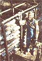
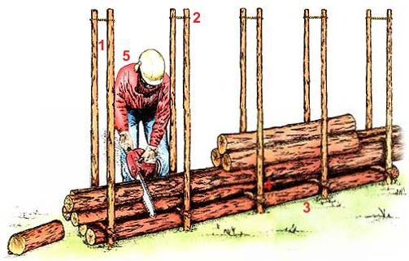

A super sawbuck for slimmer timbers.
OVER THE COURSE OF MY 21 years north of the Arctic Circle in western Alaska, I often envied "outsiders" (people from anywhere but Alaska) their magnificent hardwood forests. My stomping grounds consisted of mostly barren tundra and jumbled mountains, with thin belts of timber fringing the riverbanks. As a result, gathering firewood was often a complicated process.
Most of our fuel-straight, dry spruce logs-came from an old burn six miles down the river. Since there were no roads, we hauled wood during the winter by dog team or snowmobile. Local woodcutters had developed sleds that could snake along the twisty trails carrying logs up to 20 feet long, and nobody bothered to cut wood to stove length until it was safely home.
For 17 of those long, dark winters I cut all of our firewood using an ordinary bow saw. Even after I'd expanded the cabin and our fuel consumption increased, I stuck with the trusty Swede saw because of its quiet simplicity. Once I'd added a workshop (and hence another stove), though, practicality won out over aesthetics; I gave in and bought a chain saw.
However, true to the first law of ecology, "You can't change just one thing," I immediately found myself having to develop a whole new woodcutting routine. I couldn't simply rest the logs on my old sawbuck, because the wood sagged and tended to pinch the bar before the chain could bite through. Then again, the machine did the work so rapidly that I found myself spending most of my time moving logs around while the saw sat idling on the ground, happily gulping down gasoline. And as the cut sections piled up, I began to stumble over them, not at all healthy when you're holding a chain saw. There had to be a better way.
I'd watched my Eskimo friends lay a sledload of logs in a pile and simply cut right through the stack, but I wasn't satisfied with that solution. My chain bar was too short to span a pile in one cut, and I had to continually move sections out of the way to reach the lower logs. Also, I couldn't avoid occasionally biting into the chain-dulling ice and snow below the bottom tier.
Still, it was clearly more efficient to saw several logs at a time, so I decided to build a rack that would hold a couple of sledloads of logs in a vertical pile.
My prototype consisted of two pairs of ordinary metal fence posts spaced to allow the saw to cut through the whole stack. I simply left one layer of permanent logs on the bottom to act as a buffer to keep my saw out of the frozen ground beneath the wood. I also lashed a crosspiece to each pair of poles, placed just above the bottom layer of wood, and tied the tops of the posts together to keep them from spreading.
The results were promising, so I went on to build a permanent rack incorporating a few improvements. I used longer posts, allowing me to stack the wood as high as I could safely reach. I used saplings for these uprights because they were less expensive and safer than metal posts. And I eventually settled upon five pairs of posts rather than two, spaced at the desired stovewood length to act as built-in cutting guides and to keep the lengths from tumbling out after they were sawed.
This system was fast; I could cut through two sledloads, up to two dozen small subarctic logs, in under fifteen minutes. It was safe; the cut sections stayed in place as I worked. It was fuel-efficient, since my chain saw was always working instead of idling uselessly on the sidelines. And the rack handled logs of varying lengths if I was careful to cut from alternating ends to keep them centered.
Of the dozens of improvements I made around that cabin over the years, nothing so simple had ever paid off so handsomely. If you have access to fairly straight logs, branches or even old, untreated boards, I can highly recommend this simple rack. It sure beats cutting wood one slow stick at a time.
Wooden posts keep the logs in place and don't present a hazard to the chain-saw blade. Sink them 12" or more in the ground, and don't make them any taller than you can safely reach. Rope binders at the top of the posts prevent the uprights from spreading. Log buffers laid flat on the ground provide a permanent base and keep the saw blade out of frozen earth. A wooden crosspiece lashed to each pair of posts strengthens the yoke and raises the work above the buffers. Spacing depends on firewood length. To get stove wood 24" long, the five post sets should be placed 2' apart. To determine the front-to-back measure, let the saw be your guide-a 20" chain bar would call for a distance of 18" or so between posts.
|
|
 |
 |